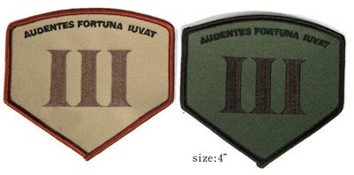
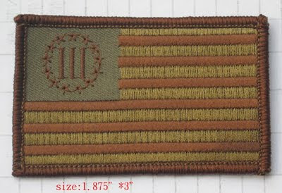
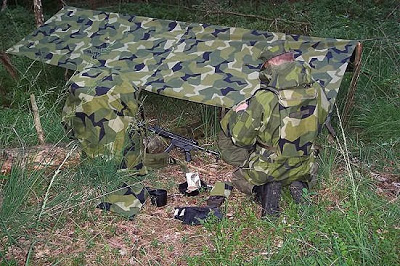
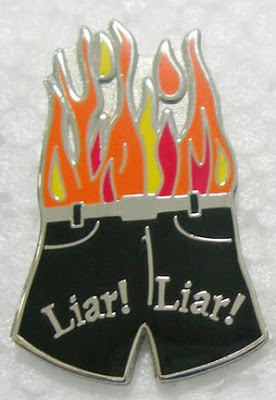
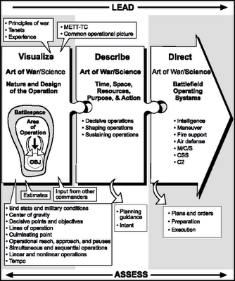

Sunday, January 31, 2010

"Luckily, a good Polish man gave my father a rifle and 150 bullets."
Faye and Irving Porter are shown with their infant son Jack in the Ukraine in 1945. They settled in Milwaukee in 1946.
My thanks to Irregular JWF for forwarding this obituary from last month of Faye Porter-Arenzon. There are several practical lessons in her life's story.
Mike
III

My thanks to Irregular JWF for forwarding this obituary from last month of Faye Porter-Arenzon. There are several practical lessons in her life's story.
Mike
III
Porter-Arenzon escaped Nazi massacre in Ukraine
After she moved to Milwaukee, she raised a family, lived to 100
By Amy Rabideau Silvers of the Journal Sentinel
Posted: Dec. 18, 2009
Everything in Faye Porter-Arenzon's life was measured by what happened Sept. 24, 1942.
She could not save her family - two young daughters, her parents, all her siblings, other relatives - from massacre by Nazi SS officers and local Ukrainian police.
But she survived, later rescued by her husband, a partisan with the resistance movement in the Ukraine. Together they lived in a partisan community in the forests of their homeland and began a family again. Together they came to America.
And she became the matriarch of a new family in a new land.
"It was a miracle," said her son, Jack Nusan Porter, a Holocaust and genocide scholar. "She survived to produce all these generations."
Porter-Arenzon - she married again after the death of her first husband - died of natural causes Dec. 1. She was 100. She last lived in St. Louis Park, Minn., where she moved to be near her daughter after the death of her second husband. Services have been held.
Born Faygeh Merin, she married Srulik Puchtik in 1937. They lived in Maniewicz, a small town in northwestern Ukraine. Later, they took the more American names Faye and Irving Porter.
By 1941, however, the Nazis had taken away most of the town's Jewish men.
"Luckily, a good Polish man gave my father a rifle and 150 bullets," Jack said. "My father started the nucleus of a mostly Jewish fighting group - the majority were Russian Jews - with other Polish and Ukrainian and Russian fighters."
On Sept. 23, 1942, the Nazis and police began rounding up all the remaining Jewish residents of the town.
"They took us out, put us in the middle of a road and counted everyone," she later recalled in a news article. She was then a 32-year-old mother, holding the hands of her daughters, ages 4 and 2.
The situation was still fluid. She tried to get people to do something, anything, saying they should burn the town and run for the forests. People were too afraid to try.
"So she told her mother and sisters and daughters, 'Let me try to find a place for us to hide,' " Jack said.
A policeman stopped her as she left the area. "Why waste a bullet on me now?" she argued. "You're going to kill us all tomorrow."
He let her leave.
She found a barn and tried to go back for her family, but by then there were too many guards. Even if she managed to get back to her family, there was no way they could escape together.
"She went back to the barn," her son said. "And the next morning she heard the shots."
Twenty-five members of her family and her husband's family were killed.
"Three-hundred-eighty Jews were rounded up and taken to the edge of town, shot and buried in a mass grave," said daughter Bella Smith.
Nazis began searching the countryside, including the barn where she was hiding. She was grazed by a bayonet as a Nazi stabbed the hay pile. That night, she crawled into the forest, alone for months.
"She didn't know my father was alive," her daughter said. "He didn't know she was alive. He heard there may have been survivors and found her. She was down to 80 pounds and he carried her back to the partisan unit."
The partisan group, which became known as the Kruk-Max Otryad, grew to include 150 fighters and more than 250 civilians in a family camp, the third-largest such group in Europe, Jack said.
"Mom was the nurse and a cook with the fighter group," Jack said. "Theirs is like the story of the movie, 'Defiance,' about the Bielski Otryad."
After liberation by the Russians in 1944, they lived at the Bindermichel displaced persons camp near Linz, Austria. There they were a rare married couple who survived the war, becoming surrogate parents to young people who had lost their own.
"They would walk these girls down the aisle when they married," Jack said.
His father's brother, in the U.S. since the 1920s, heard they were alive. He sent $100, enough for steerage tickets for the couple and son Jack. They first lived in Chicago, but soon settled in Milwaukee in 1946.
Irving Porter became a scrap dealer. Faye Porter took care of her family, becoming the mother of another son, Shlomo, and daughter Bella, and later a grandmother and great-grandmother.
Her husband died in 1979. Porter took in young women boarders, always interested in trying to find everyone a marriage partner.
She also played matchmaker for herself.
"Do you know someone who wants to get married?" she asked a nice man at a neighborhood senior center.
"Yes," said Yehuda "Judah" Arenzon. "Me."
They married in 1980. He died in 1986.
She remained warm and giving, hopeful and kind.
"She was a tzadakis, a righteous person," Jack said. "People actually came up to her and asked her to bless their children and themselves."
"Don't be stingy with a blessing," she would say. "It doesn't cost anything."
As Porter-Arenzon got older, her blessings took on special meaning.
"She would say, 'God should bless you that you should come in my age and be healthy,' " her daughter said.
The latest from Raven's Wood Enterprises: The III "Fortune Favors the Bold" patch passes into collector status.


The III Patch passes into history.This just in from Raven's Wood Enterprises:
Guys,
If you would please post this on your blogs, I'd really appreciate it.
Raven's Wood Enterprises would like to thank all those who purchased the "III" (Threeper) 'Fortune Favors the Bold' patch.
The time has come, due lack of demand, to no longer carry the "Fortune Favors the Bold" patch. Most everyone seems to have what they want, or have decided they like the Nyberg III Flag patch better.
So, all "Threeper" patch orders received to date (1/31/10) have been processed and sent. Any other orders received for the Threeper patch will be returned.
Nyberg III Flag patches will contine to be offered for the foreseeable future.
Thanks again!
Raven's Wood Enterprises, LLC


The Nyberg "III" Flag Woodland patch is still available from Raven's Wood Enterprises, LLC, $3 each post paid. The patches measure approximately 1.9 X 3 inches and are of the same quality that the "Threeper" patches were.
USPS Money Orders, Cashier's & Certified Checks and cash (though any orders in cash are at the sender's sole risk) get immediate processing and shipment. Personal & business check orders are held 10 days until the check clears.
Send all orders to:
Raven's Wood Enterprises, LLC
PO Box 962
Birmingham, MI 48012
A message of thanks from SGT Matthew Vanderboegh and comments upon LTG Hertling and the bayonet.
I have been quite busy here with work, and have not had a chance to follow the blog as I should. First I would like to express my heartfelt thanks to all of those who sent birthday wishes. It is truly humbling to see the outpouring of gratitude from perfect strangers on this website. I am ashamed that I have not reciprocated the good wishes of the readers of this blog. Please pass on my gratitude on behalf of myself, Nicole and the kleine mann.
Second I would like to address the postings of LTG Hertling. My current assignment is with the Command Group of the 1st Armored Division. The same division that LTG Hertling just left. My time with the General was albeit brief and in an indirect support role, but I was extremely impressed with his candor and professionalism. Respect is earned and not given. From speaking with others who did, I can say that have not seen a General (to include GEN Petraeus) more respected or admired then LTG Hertling. There are those that might doubt his gasp upon reality but I would offer the Generals own comments about his resume and add that I doubt that any of his detractors have led anything higher then a squad during combat operations in Iraq. Big Army makes decisions for the whole of the Army because of decades worth of Army experience. Bottom line; this guy is not a career staff officer nor is he an armchair General. Your readers should probably listen to him.
Yes, it is quite true that the Army has moved away from many Cold War common tasks. Ask any Infantryman when the last time he applied camouflage to himself or dug a foxhole and I am sure he will tell you "basic training". He can, however, raid and cover ground quicker then his predecessors. It is just the nature of how the war in Iraq is being fought. I would offer that when they did away with things like Sergeant's Time Training, a lot of fieldcraft was lost. So it is with bayonet drills. For better or worse it is just not the Army that many of the readers knew from the 80's and 90's.
The Army aside, the decision to take away the bayonet makes little to no difference to your mission focus. I would not doubt if your readers would prefer their KaBar's to the bayonet anyway.
Now it is obvious that I raised my kids to think for themselves and equally obvious that we disagree on this issue. However, the only time I winced was when reading this: "I doubt that any of his detractors have led anything higher then a squad during combat operations in Iraq."
If I may exercise a father's prerogative to gently chide his son, this is gratuitously and needlessly insulting to those of you, veterans of World War II, Korea and Vietnam, who have emailed me and posted to the contrary of LTG Hertzler's opinion -- some of you who have told me you owe your lives to the bayonet and bayonet training. I'm sure he didn't intend it to be insulting to them, but that is how, I am positive, that they will take it.
Well, as I have said before many times, us Vanderboeghs are opinionated so-and-sos.
And since we are on the subject of bayonets, here are two photos of a Marine outfit in Iraq in 2004, forwarding by Irregular RCB with this comment:
K/3/1 USMC Fallujah assault 2004. Bayonets fixed. Photo from an embedded photographer with our unit.


Minuteman-in-training Gabriel Vanderboegh demonstrates his foreign weapon handling skills.

The latest from the Vanderboegh forward operating base somewhere in Germany:
Enclosed are pictures of Gabriel doing foreign weapons training. He said "Those of us in a civilian defense role should best look first to our midsections before we get into minute doctrine pissing matches."
Not even close to being three, my grandson is awful young to be having opinions on doctrinal disputes, but then us Vanderboeghs always were opinionated so-and-sos.


"Gitsum!"

The rubber AK is a training aid that I bought off of a Special Forces sergeant over twenty-five years ago. I have pictures somewhere of Matthew, in VN era cammies and boonie hat with the same "weapon."
Mike
III
LATER: Many thanks to the anonymous Irregular who told me how to fix the photo orientation!
Saturday, January 30, 2010

Praxis: LTG Hertling responds to my post on the bayonet.
LTG Mark Hertling.
Folks,
LTG Mark Hertling responded to my earlier praxis post on the bayonet, giving a thoughtful and more detailed explication of the Army's current thinking. Here it is. I will have comments on the other side.
General Hertling over Iraq.
My comments:
While LTG Hertling's thinking is made more clear by his kind response, I maintain my own position (as previously set out) that, at least for the purposes of the militia of the United States, bayonets and bayonet training should not be neglected.
I do thank LTG Hertling for taking the time to respond to my concerns, but I stand by my position.
Mike Vanderboegh
III

Folks,
LTG Mark Hertling responded to my earlier praxis post on the bayonet, giving a thoughtful and more detailed explication of the Army's current thinking. Here it is. I will have comments on the other side.
LTG Mark Hertling has left a new comment on your post "Praxis: The Bayonet":
A few Soldiers who I respect mentioned this blogsite and some of the things being posted as a result of an interview I did at Ft Jackson. They recommended I clear things up with some additional information.
We're revising how we "fight with a rifle" as part of basic training. We're looking at the most likely ways Soldiers will be asked to fight, based on what we've learned in combat, especially in combat over the last eight years. Our new training will include significant changes in a pugil assault course (which I would challenge anyone to compare to the old Bayonet Assault Course, and see which one they think is tougher), fighting with devices (knives, etc) and revising our combative training skills. That is in addition to how we conduct tough physical training, and a more intensive form of basic and advanced rifle marksmanship. It will be pretty intense, and -- more importantly -- relevant to the current and future operating environment.
We can teach the "spirit of the warrior" (replacing the "spirit of the bayonet, as I was taught)by using all kinds of devices and training in our professional values. And that might be important, because the chance of actually using a bayonet in combat is relatively rare (even given the unique actions of the Highlanders, or that of the great infantry hero COL Millett).
For those who submitted comments about me personally, I did have to smile. Yes, my chosen branch was Armor. I've commanded Infantry and Cavalry units, and have had three tours in combat, and I've been assigned to two different training centers. And by the way, in all my years, I've never seen bayonet training being conducted outside the training base (Army or Marines), so I'm wondering how people sustain these critically important skills....or is this just something that is introduced in basic, and never practiced again? Seems to be the case. Not a good way to train.
Thanks for all of you for being interested in what we're doing in the training base. We're still producing the best Soldier in all the world...and we're trying to keep it that way!
General Hertling over Iraq.

My comments:
While LTG Hertling's thinking is made more clear by his kind response, I maintain my own position (as previously set out) that, at least for the purposes of the militia of the United States, bayonets and bayonet training should not be neglected.
I do thank LTG Hertling for taking the time to respond to my concerns, but I stand by my position.
Mike Vanderboegh
III
Looks like the ATF will end up as roadkill in the Road Dog case.
"I learned from an insider that other ATF Special Agents (not SA Cefalu) came forward and testified last week, called ATF bosses liars, and that the next hearing is February 9th." -- Confidential intelligence report from CPT Jonathan Tuttle.
In a related development, ATF Acting Director Melson decides to adopt Wile E. Coyote as the agency mascot.

CPT Jonathan Tuttle of the Beltway Commandos reports in on the Road Dog case (see "Liar, Liar, Pants On Fire"). It seems that CPT Tuttle is now in a sort of friendly competition with CPT R.A. Bear of the Dogtown Rangers to see who can dig up the most embarrassing dirt on the ATF. I wouldn't be surprised to see this one end up on a network.
His report reads, in part:
Dear Mr. Vanderboegh,
This case is going on as we speak. I learned from an insider that other ATF Special Agents (not SA Cefalu) came forward and testified last week, called ATF bosses liars, and that the next hearing is February 9th. I also learned this is an ongoing RICO trial involving an illegal wiretap.
The story below, published last November, states that trial is set for July 10, 2010.
http://thehive.modbee.com/node/16791
Bee staff writer Leslie Albrecht can be reached at lalbrecht@modbee.com or 578-2378. Follow her at Twitter.com/BeeReporter.
I find she is reporting the case on her Twitter: http://twitter.com/roaddogcase
The most recent article, published January 10, 2010, is at:
http://www.modbee.com/local/story/1016365.html
nota bene:
"The courtroom was cleared of onlookers — except attorneys and defendants — when the agents testified because they still work undercover, Faller said.
The two undercover agents talked about the progress of the investigation into Holloway and Road Dog in 2005 and 2006. They backed up what another Alcohol, Tobacco and Firearms agent, Vincent Cefalu, told the court previously: that investigators were making headway in their probe into Holloway's activities, Faller said.
That's important because it strengthens the assertion that the government lied on its wiretap application. Wiretaps are considered an extraordinary invasion of privacy, so the government is only allowed to use one if other investigative methods have failed. That's what the FBI claimed when it asked Wanger for permission to tap Holloway's phones."
Read more here: http://www.modbee.com/local/story/1016365.html#ixzz0e7JdPMbz
. . . I'm sure court documents are available through the PACER system, to which I don't have access, and I don't know the name of the case.
Best regards,
CPT Jonathan Tuttle
Beltway Commandos, S-2
So, is there a lame stream media outlet that is willing to follow this story through to the inevitable Congressional hearing? Inquiring minds want to know.
They are now talking plea agreement with the principal defendant. This is what they always do when their case comes apart. Just ask Doug Friesen.
But what about the street agents? Chief Counsel's Office's initial impulse will be to come down on Agent Cefalu and his fellow agents who told the truth. But can DC afford to take that risk? Now? With every other case falling out of the sky thanks to their own incompetence or unlawful and corrupt vindictiveness?
By now, Melson has to be feeling like Wile E. Coyote. Every time they try for the roadrunner, either gravity or their own Acme explosive device gets them instead.
Mike Vanderboegh
The alleged leader of a merry band of Three Percenters.
Praxis: Bashas (Tarp Shelters) and "Nite Ize"


Tarp Shelter, aka "basha" in the armies of Britain and the Commonwealth (except the the Australians, who call it a "hootchie") available at GearBroker.The Trainer runs a hard-core Minuteman unit in the north woods of the upper Midwest. His boys (sorry, no girls) run winter survival exercises routinely in the cold and deep snow. They do not use tents, but rather tarp shelters. Tarps are preferable to tents for many reasons -- and in all seasons. They are lighter and less bulky than tents, can be used as a sunshade in warm weather or to provide the barrier to the elements in cold, rain or snow. Tarps are much faster to pitch and take down than tents and, most importantly, they are lighter.
The encyclopedia on tarp shelters by the Aussie David B. MacPherson is found here in pdf, and here in html, both courtesy of the Equipped to Survive website. From their introduction:
This document courtesy of David B. Macpherson provides an excellent introduction to the subject of tarp shelters. He provides a wealth of valuable and useful information on their use and construction, covering everything from the most basic immediate action shelter to sophisticated structures.
David notes that this is a work in progress and we encourage those with suggestions to contact David at the email listed at the bottom of the document. Please note that David is from Australia and that should explain some of the spelling and nomenclature differences that will be noticeable to U.S. readers.
Some designs in the document are far more practical than others, especially for use in the wilderness. David has included as many as he could for the sake of completeness, even if some are impractical in survival situations.
David noted when submitting this document, "I make mention in the document that Tarp-shelters have limits to how much bad weather they can take. I believe that anyone wanting to use ANY of these designs should try them out in a 'safe' environment first, rather than blindly rely on them (sight unseen/unevaluated) in a survival or wilderness situation."
He also commented, "some of these designs will work better depending on the type of tarp being used. Canvas, nylon, poly-tarp, each fabric type has its own special abilities and drawbacks."
Excellent illustrated tutorials on bashas can be found here at WoodcraftWanderings.org and here and here at OutdoorIdiots.
My suggestion would be to start at WoodcraftWanderings and OutdoorIdiots, print out the tutorials and then go to MacPherson's encyclopedia for further ideas.
Now the biggest pain with tarp shelters is the rope work (knots and tensioning) necessary to pitch them. Here is the modern solution to that:

Again from the Trainer, these come highly recommended. Meet the NiteIze, available from REI for $2.50 each, these little boogers make pitching and taking down a tarp shelter a breeze.
Here's the Nite Ize company page: http://www.niteize.com/pages/hardware
Praxis: Radio Throat Microphone

The Trainer offers these words on a suggested throat mic for radios that he's tested in the field and found excellent.
Mike,
Here's the throat mic company: http://www.dynamicdesignsus.com/servlet/the-95/Throat-Mic-Tactical-Headset/Detail
The model in this pic is the serious one. $40, but worth it. After you check out their site, you'll find they have all sorts of goodies including replacement parts, cheap. They ship fast and stand behind what they sell.
And here is the description from the site:
Throat Mic Tactical Headset for Midland (2 Prong Plug)
Manufacturer: Dynamic Designs
SKU: EMP324MID
Price: $39.99
The new tactical / heavy duty adjustable throat microphone with acoustic tube (FBI style) headset as seen in the actual photos. The dual condenser microphone picks up the user's voice directly from the vocal chords. This drastically cuts down on ambient noise. The clear acoustic tube headset fits snugly in the ear and keeps incoming transmissions clear and private. Excellent for use in loud environments. Features a large heavy duty push to talk button that is easily accessible while wearing heavy gloves and can be clipped almost anywhere. Can also be mounted on your side with the PTT button activated by an elbow without taking your finger off the trigger. Replaces costly original manufacturer's headsets- perfect for tactical and service applications in loud environments. Can be used on either the left or right ear.
Excellent for use in police, military, nightclubs, bars, paintball, security, restaurants, hotels, bouncer, warehouses, and noisy environments.
Headset is for use for all Midland Extra-Talk and G-Series radios and many more requiring a 2 prong Midland plug:
* G Series: G223 G-223, G-225 G225 G-225C2, G226 G-226, G227 G-227, G-227C2 G227C2, G300 G-300 G-300C2 G300C2, G300M G-300M, G300MC2 G-300MC2
* GXT Series: GXT GXT-250, GXT300 GXT-300 GXT300VP3 GXT-300VP3, GXT310 GXT-310 GXT310VP GXT-310VP, GXT325 GXT-325, GXT400 GXT-400, GXT444 GXT-444, GXT450 GXT-450 GXT450VP4 GXT-450VP4, GXT500 GXT-500 GXT500VP4 GXT-500VP4, GXT550 GXT-550 GXT550VP4 GXT-550VP4, GXT555 GXT 555, GXT565 GXT 565, GXT600 GXT-600, GXT635 GXT-635, GXT650 GXT-650, GXT661 GXT-661, GXT700 GXT-700, GXT710 GXT-710 GXT710VP1 GXT-710VP1 GXT710VP3 GXT-710VP3, GXT720 GXT-720 GXT720VP3 GXT-720VP3, GXT735 GXT-735, GXT750 GXT-750 GXT750VP3 GXT-750VP3, GXT 775 GXT-775 GXT775VP3 GXT-775VP3, GXT800 GXT-800 GXT800VP4 GXT-800VP4, GXT808 GXT-808, GXT850 GXT-850 GXT850VP4 GXT-850VP4, GXT900 GXT-900 GXT900VP4 GXT-900VP4, GXT910 GXT-910 GXT910VP3 GXT-910VP3, GXT950 GXT-950 GXT950VP4 GXT-950VP4
* LXT Series: LXT, LXT80 LXT-80, LXT110 LXT-110 LXT110VP LXT-110VP, LXT210 LXT-210 LXT210VP LXT-210VP, LXT216 LXT-216, LXT300 LXT-300 LXT300VP3 LXT-300VP3, LXT303 LXT-303, LXT305 LXT-305, LXT310 LXT-310, LXT315 LXT-315 LXT315VP3 LXT-315VP3, LXT317 LXT-317, LXT320 LXT-320 LXT320VP3 LXT-320VP3, LXT322 LXT-322, LXT330 LXT-330 LXT330VP3 LXT-330VP3, LXT335 LXT-335 LXT335VP3 LXT335-VP3, LXT340 LXT-340 LXT340VP3 LXT-340VP3, LXT345 LXT 345 LXT345VP3 LXT-345VP3, LXT350 LXT-350 LXT350VP LXT-350VP, LXT410 LXT-410, LXT420 LXT-420, LXT435 LXT-435, LXT440 LXT-440 LXT440VP3 LXT-440VP3, LXT460 LXT-460 LXT460VP3 LXT-460VP3
Specifications
The coiled cable length from the radio connector to the push to talk button is 6 feet (fully extended). The coiled cable length from the button to the throat microphone is 5 feet (fully extended). Push to talk button is 1.75" wide. Throat mic has been tested on neck sizes up to 19".
Speaker Specs: DIM: φ45±0.5mm Impedance: 8Ω ±15% Sensitivity: 82dB±3dB Frequency Response: 200Hz-3.5KHz
Microphone Specs: Size 9.7 X 6.7mm Frequency Response: 20Hz-16KHz Impedance: 2.2KΩ Sensitivity: -36dB±2dB
Color: Clear silicone ear piece with clear coiled cable with black microphone, cable, button and connector.
Friday, January 29, 2010
ATF Serial Perjury Follies Once Again: Liar, Liar, Pants on Fire


New ATF Meritorious Service Medal, approved by the Chief Counsel's Office.My thanks to CPT R.A. Bear's associate in counterintelligence, CPT Jonathan Tuttle of the Beltway Commandos, for fowarding this story from the NAGR blog. My comments follow the second story.
BATFE agent commits perjury
An agent for the Bureau of Alcohol Tobacco, Firearms and Explosives (BATFE) has revealed that agents have committed perjury in order to persecute gun owners.
From the Modesto Bee:
An agent from the federal Bureau of Alcohol, Tobacco, Firearms and Explosives is expected to tell the court that investigators lied in order to get permission to put a wiretap on Holloway’s phones. Defense lawyers say the agent’s claims cast doubt on the case against Holloway.
“You don’t usually see this in a case, where you have a government officer himself challenging the conduct leading up to something as important as a wiretap,” said Bill Osterhoudt, one of Holloway’s attorneys. “I think the judge will be interested in hearing it out.”
The agent, 50-year-old Vince Cefalu, said Thursday he couldn’t discuss his testimony. Cefalu said he was the lead investigator on the Road Dog case in 2005 and 2006, before the FBI became involved. He still is employed by ATF, working in the agency’s Dublin office.
Web post talks of ’shortcuts’
In a posting on the whistle- blower Web site CleanUpATF.org, Cefalu said investigators took “illegal shortcuts” to get the Holloway wiretap. “The officers committed perjury in their application affidavit for the tap,” Cefalu wrote in the posting.
When Cefalu spoke up about the “unethical and illegal” actions, he was removed from the case, he wrote in the Internet posting.
Prosecutors say Cefalu is a disgruntled employee with an ax to grind. Cefalu has filed several complaints about misconduct at ATF. He’s asked for federal authorities to investigate his claims.
Defense attorney Carl Faller, who represents Road Dog defendant Steven Johnson, said he expects prosecutors to paint Cefalu as an unreliable source, but he believes Cefalu is credible.
“This isn’t somebody with unknown qualifications who was sitting in their basement wearing an aluminum foil hat waiting for spaceships to land,” Faller said. “This is someone who was then and is currently employed as a federal law enforcement agent.”
It should come as no surprise to gun owners that the BATFE would be caught red handed twisting the law to persecute gun owners. Indeed, the BATFE has a long history of shading the truth and outright perjury in cases against gun owners.
Websites like CleanUpTheATF.org have attempted to documented the abuses and excess of the BATFE, though I believe we are long past “fixing” the BATFE.
Federal Raid on Road Dog Cycles.

Here is the original story from the Modesto Bee:
Friday, Jul. 24, 2009
Defense gets turn in Road Dog case
ATF agent expected to say that investigators got wiretaps illegally
By Leslie Albrecht
The way prosecutors tell it, the story of Robert C. Holloway and Road Dog Cycle reads like a crime movie screenplay: a one-time Stanislaus County sheriff's deputy who built a criminal empire out of his Denair motorcycle shop, maintaining power through fear and violence — and with help from Hells Angels and crooked lawmen.
Holloway, 61, was arrested a year ago along with 11 other men. He's charged with racketeering, running a chop shop, trafficking in stolen motorcycle parts and using violence to collect debts. Three defendants have pleaded guilty. Holloway is in a Fresno halfway house awaiting trial.
Today in a federal courtroom in Fresno, the story is expected to take another dramatic turn — only this time defense attorneys are writing the script.
An agent from the federal Bureau of Alcohol, Tobacco, Firearms and Explosives is expected to tell the court that investigators lied in order to get permission to put a wiretap on Holloway's phones. Defense lawyers say the agent's claims cast doubt on the case against Holloway.
"You don't usually see this in a case, where you have a government officer himself challenging the conduct leading up to something as important as a wiretap," said Bill Osterhoudt, one of Holloway's attorneys. "I think the judge will be interested in hearing it out."
The agent, 50-year-old Vince Cefalu, said Thursday he couldn't discuss his testimony. Cefalu said he was the lead investigator on the Road Dog case in 2005 and 2006, before the FBI became involved. He still is employed by ATF, working in the agency's Dublin office.
Web post talks of 'shortcuts'
In a posting on the whistle- blower Web site CleanUpATF.org, Cefalu said investigators took "illegal shortcuts" to get the Holloway wiretap. "The officers committed perjury in their application affidavit for the tap," Cefalu wrote in the posting.
When Cefalu spoke up about the "unethical and illegal" actions, he was removed from the case, he wrote in the Internet posting.
Prosecutors say Cefalu is a disgruntled employee with an ax to grind. Cefalu has filed several complaints about misconduct at ATF. He's asked for federal authorities to investigate his claims.
Defense attorney Carl Faller, who represents Road Dog defendant Steven Johnson, said he expects prosecutors to paint Cefalu as an unreliable source, but he believes Cefalu is credible.
"This isn't somebody with unknown qualifications who was sitting in their basement wearing an aluminum foil hat waiting for spaceships to land," Faller said. "This is someone who was then and is currently employed as a federal law enforcement agent."
Phone calls to be argued
In addition to Cefalu's testimony, U.S. District Judge Oliver W. Wanger will hear arguments on whether to throw out wiretap evidence against Holloway. Defense attorneys have filed a motion to suppress the evidence.
Thousands of taped calls from Holloway's cell, business and home phones make up the heart of the government's case. Tossing out that evidence would "put a tremendous hole in the middle of the prosecution's case," Faller said.
It was Wanger who gave investigators permission to tap Holloway's phones in the fall of 2007. Wiretaps are considered an extraordinary step because they intrude on a citizen's privacy. To use one, investigators must convince a judge that traditional surveillance methods aren't working. They also must show that there's probable cause to believe that the wiretap target has, is or will commit certain crimes.
Defense attorneys say the FBI failed to do both. In court filings, defense lawyers charge that the FBI relied on hearsay and emotionally charged innuendo — not hard facts — to make a case that Holloway was engaged in criminal activities. Prosecutors say agents proved there was "substantial basis" for probable cause.
Motions filed concerning the wiretaps reveal the extent of the government's digging into Holloway — and, more interestingly, what they thought they would uncover.
When the FBI first applied for a wiretap in September 2007, agents told Wanger they expected to catch Holloway involved in money laundering, firearms violations, and manufacturing, importing and selling meth and marijuana. Holloway isn't charged with any of those crimes.
Documents give money clues
Prosecutors have yet to say how vast and profitable Holloway's suspected racketeering operation was. Court documents provide some clues. One search warrant turned up $13,000 in cash, several stolen motorcycle parts, a loaded 9 mm pistol and a 12-gauge shotgun. In a guilty plea, Hells Angel Ray Heffington admitted to trafficking in stolen motorcycle parts worth $10,000 to $30,000. Holloway's estranged son told the court in May that Holloway has money and connections stashed across the globe.
Court filings show that government agents were tracking Holloway as far back as 1999. As the probe grew, it included undercover agents and at least three informants, one of whom worked at Road Dog. Agents followed Holloway to San Diego. They trailed a truck carrying motorcycle parts from Denair to Bakersfield and then to Los Angeles.
Defense attorneys say those surveillance methods worked, but agents intentionally downplayed their success to justify the wiretap application.
Prosecutors say that's not true. They say investigators couldn't use traditional methods because Holloway had too many connections with law enforcement and outlaw biker gangs. Holloway, who was once a sheriff's deputy, would be wise to law enforcement techniques, they say. Using informants and undercover agents was risky, prosecutors say, because Hells Angels have a history of retaliating against people who give information to the government.
MBV: Here's the thing that is going to continue to eat away at the street agents who are tasked with "making the case" by higher ups regardless of the law. If you do what they ask and testify falsely under oath, do you think that THEY will suffer the consequences of the perjury, or will it be the street agents?
Sooner or later, especially in those cases with the fingerprints of the Chief Counsel's Office on them, someone is going to refuse to open themselves up to a stint in federal prison just to forward an agenda under the color of law rather than enforce the law itself.
There is already a long-standing grievance in the minds of the street agents over enforcing "chickenshit" paperwork violations and shaking down law-abiding gun stores like Red's just because the Chief Counsel's Office (who, as we have explained before, actually runs the day-to-day operations of the ATF) is eager to lick the boots of the anti-gun Congressmen and Senators who provide the money for the agency budget and political cover in case of misadventure. The best of the street agents would rather be going after MS-13 and other gangs. (Actually, anti-gang stuff is something the ATF has historically done very well on.)
It is only a matter of time before somebody within the agency decides that it is in his or her enlighted self-interest to bring the whole rotten structure down, tumbling the professional liars of the Chief Counsel's Office into the dirt and shining the antiseptic treatment of sunlight on a bureaucratic bunch of morally diseased scum -- the same kind of scum who put David Olofson in prison for a malfunctioning semi-auto rifle and who attack innocent gun owners, dealers and manufacturers with "economic Wacos" as an example to the rest of us of the dangers of disrespecting and resisting the diktats of the Regime's apparatchiks.
Mike
III
NOTE: Once again, Jody Keeku and Little Jimmy Vann have my thanks for getting me off the sidelines and back into the fight against this monstrous criminal conspiracy against the law, the Constitution and the people of the United States, all in service of a vile agenda that the Founders would spit upon.
Praxis: The Bayonet

Millett and his men were patrolling in the vicinity of Soam-Ni when they encountered enemy troops along a ridge known as Hill 180. After one of his platoons was pinned down by small-arms, automatic and antitank fire, Millett ordered his men to fix bayonets. He then led an assault up the hill, where, according to his citation, he "bayoneted two enemy soldiers and boldly continued on, throwing grenades, clubbing and bayoneting the enemy, while urging his men forward by shouting encouragement." . . .
“I assaulted an antitank rifle crew,” he told Military History magazine in 2002. “The man at the point was the gunner. I bayoneted him. The next man reached for something, I think it was a machine pistol, but I bayoneted him — got him in the throat.” The third soldier had a submachine gun. “I guess the sight of me, red-faced and screaming, made him freeze,” he recalled. “Otherwise he would have killed me. I lunged forward and the bayonet went into his forehead. With the adrenaline flowing you’re strong as a bull. It was like going into a watermelon.”
 Bayonet Drill, World War II
Bayonet Drill, World War IIMy thanks to TypeAy for forwarding this story from the Fort Jackson, SC, local paper:
Thursday, Jan. 28, 2010
General overhauling training aims for combat-ready troops
By CHUCK CRUMBO
Army basic training needs to get back to basics.
That's the word from Lt. Gen. Mark Hertling, who's in charge of overhauling Army training.
"We need to make sure that what we're training is a good soldier we can hand over to their first unit and make sure they're ready for combat," Hertling, deputy commanding general for initial military training, said Wednesday during a visit at Fort Jackson.
Before the war on terror began in 2001, U.S. troops trained to fight a large, mechanized force like the Russian army in the woods and mountains of eastern Europe.
But in recent years basic training has undergone a number of changes as the Army adapts to an enemy in Afghanistan and Iraq that lives among the general population and travels by pickup and donkey cart.
To prepare soldiers for today's battlefield, a number of tasks have been added to the 10-week training program and a few have been removed, said Hertling, a former tank commander.
Soldiers are taught a number of skills, but don't have the time to master all of them, said Hertling, who's assigned to the Army's Training and Doctrine Command at Fort Monroe, Va.
"We were teaching soldiers too much stuff," said Hertling, a veteran of Desert Storm and the wars in Afghanistan and Iraq. The result was a "task paralysis" and loss of focus.
One task Hertling wants to do away with is bayonet training.
In today's wars, there's no reason for soldiers to learn how to fix bayonets to their rifles and disembowel an enemy combatant, Hertling said. Besides, bayonets don't fit rifles soldiers carry today, he added.
Hertling, though, conceded that bayonet training is deeply ingrained in the Army culture.
"Some of these ideas would make old infantrymen turn over in their graves," Hertling said.
Hertling also wants combatives or hand-to-hand fighting to de-emphasize grappling or basic wrestling moves. Instead, soldiers need to learn to fight with their hands and use anything they can grab - whether it is a knife or stick - as a weapon, he added.
Recruits need to learn how to use their hands, the St. Louis native said. "A greater majority of recruits have never been in a fistfight," he added.
Fort Jackson is the largest of the Army's five basic training centers. About 40,000 or half of all soldiers and 80 percent of the women entering the Army each year are trained at the Columbia post.
 Training at Camp Funston, KS, 1918.
Training at Camp Funston, KS, 1918.TypeAy forwards this snippet and comment upon it.
quote: "One task Hertling wants to do away with is bayonet training.
In today's wars, there's no reason for soldiers to learn how to fix bayonets to their rifles and disembowel an enemy combatant, Hertling said. Besides, bayonets don't fit rifles soldiers carry today, he added."
Right.
Tell that to (U.K.) Lt. Adamson

Bayonet-charge officer tells of frontline heroics
15 September 2009
A fearless Army Officer from the Isle of Man who has been awarded the Military Cross for his "supreme physical courage" and "calm leadership" in combat has been remembering how he made a bayonet charge towards the enemy, thus ensuring the safety of his platoon.
Lieutenant James 'Jim' Adamson, 24, then a platoon commander with The Royal Regiment of Scotland, has already been awarded a Mention in Dispatches (MiD) - the oldest form of recognition for gallantry within the UK Armed Forces in the previous Operational Honours list in March - for his bravery in Afghanistan.
Shortly after the incident that earned him a MiD during a mission to secure a strategically important district centre on October 7, 2008 Lt Adamson's platoon came into repeated contact with enemy forces.
His platoon however continued to advance, but the sections became separated as they secured the compounds taken. "My sections were static but too far apart for my liking," said Lt Adamson, speaking at a short ceremony announcing the names on the latest Operations Honours and Awards list, published on Friday, September 11, 2009.
"I was positioned with the mortar fire controller and the interpreter to the north, 100 metres from each between two sections - which is a long way in the Green Zone."
As they moved up a shallow stream to link up with one of the sections, two enemy fighters emerged five metres in front of them firing a machine gun. Lt Adamson immediately shouldered his weapon and as the mortar fire controller fired made a bayonet-charge towards the enemy.
His citation reads: "Adamson's leadership throughout the day was exceptional. His actions neutralised an enemy flanking attack that could have resulted in his platoon taking casualties. Adamson's supreme physical courage, combined with the calm leadership he continued to display after such a traumatic and bloody experience was of the very highest order.
"They set the greatest possible example to the Company and had an inspirational effect on his men for the final hard remaining weeks of the tour. Adamson's actions on this day are deserving of the highest official recognition."
Lt Adamson said: "I was acting on auto-pilot more than anything. The nature of the terrain and conflict there means it is more natural that platoon commanders see action now rather than stand back and command."
His girlfriend Sophie Bewick who attended the ceremony with him said: "I'm very proud of what he did, although I did make him promise before he left that he wouldn't do anything dangerous and get a medal. And he comes back with two!"
Lt Adamson attended the Isle of Man Grammar School in Ramsey, and commissioned into the Army as an officer in August 2007. He is currently a Company Second in Command of his battalion, which is based in Canterbury, although he is soon to be posted to the Falklands Islands for two months.
His parents Andrew and Trisha still live in the Isle of Man.
 CPT Lew Millet leads his soldiers in a bayonet charge that won him the Medal of Honor, Korea, 1951.
CPT Lew Millet leads his soldiers in a bayonet charge that won him the Medal of Honor, Korea, 1951.I urge readers to go to the link and listen to Lt. Adamson's description of the engagement. Both he and the FO ran out of ammo. When the last attacker continued to close, Adamson did the best thing he could think of: he charged and bayoneted the man. He then describes spending two long minutes with empty weapons waiting for the cavalry to arrive.
Vanderboegh's thoughts on the matter: Bayonets are a piece of dead weight on an infantryman who needs to shave every ounce -- until he needs one desperately.
Statistically, this may not happen often these days, especially in modern armies with massive supporting fires and logistical tails at their back. But try to tell Lt. Adamson that his case was "statistically insignificant" and I suspect he will give you a rude and profane Brit answer.
Note well that Lt. Adamson was at the tip of the spear (no pun intended) of a modern army. Yet both he and his FO ran out of ammo. Excrement happens. Note also that his bayonet was already fixed. He wasted no time because he was ready with the weapon and trained in its use. The extra second or two undoubtedly saved his life.
I have had this argument with a very good friend, a West Pointer and career Army officer, for the better part of a decade now. Like LTG Hertling, he believes the bayonet is superfluous on a modern battlefield.
I say that as long as a light infantryman may find himself alone, out of ammo, isolated on a battlefield, the bayonet will still be needed. Likewise, as long as soldiers -- professionals or militia -- are needed to man roadblocks, secure installations or maintain order among crowds of civilians, the bayonet provides plain psychological evidence of serious intent without reducing the equation to shoot or retreat.
This will, I am sure, be one of my more controversial praxis posts because everyone has an opinion. Hertling is right about one thing: You can't mount a bayonet on the current M-4. But is this a reason to do away with the bayonet, or to fire the Army procurement general who approved the design?
One thing I'll bet on though.
Hertling might talk the Army into getting rid of bayonet training, but the Marines will tell him to go to hell, thank you very much.

Hey Tea Parties -- Keep your eyes on these Dead Elephant Party bastards.

From Politico.com:
House GOP seeks comeback strategy
By: Jake Sherman and Patrick O'Connor
January 29, 2010 04:49 AM EST
Republicans couldn’t ask for a better political environment.
But the momentum from Massachusetts and a meltdown in the Democrats’ agenda haven’t exactly translated to better poll numbers for the GOP.
House Republicans left for their annual retreat in Baltimore on Thursday searching for ways to shed the “party of no” label and convince voters they’re ready to lead.
“Listen, they’re not enamored with us, except that right now they’re ready to take a chance on us because they’ve seen what the other team can produce,” House Minority Leader John Boehner told reporters Thursday before leaving for Baltimore.
Part of the problem is that the Republicans’ 12-year run in the majority is still fresh in voters’ minds.
“In 1994, nobody had any memory of Republicans in power,” said Arizona Rep. Jeff Flake, an outspoken small-government conservative whose crusade against earmarks has put him at odds with party leaders over the years. “Now they do, and it wasn’t pretty. And so we have something to overcome that we really didn’t in 1994.”
A question moving forward is whether Republicans should work with President Barack Obama to look productive or stay unified against him to prevent Democrats from any election-year wins.
Obama addresses the conference Friday afternoon. His first visit with Republicans last year was a cordial affair, but eventually resulted in acrimony after GOP lawmakers unanimously opposed his economic stimulus package. The relationship has proved testy ever since.
In his State of the Union address, Obama told Republicans he wants to work with them and said that he’d like to meet with party leaders more frequently.
The Republican leader isn’t showing much appetite for deal making heading into a critical midterm election. As Boehner told reporters: “I know who I am, I know what my principles are. I know what the principles of my members are, and I’m not going to sacrifice my principles just by sitting down and negotiating.”
But he’s clearly aware that the “party of no” label is casting a cloud over the GOP. According to excerpts of remarks to his colleagues Thursday evening, Boehner said, “Yes, we could conceivably win by simply opposing everything and standing for nothing. But could we govern that way? I think we all know the answer is ‘no.’”
“While it is true majorities typically beat themselves, it is critically important for the minority party to demonstrate that it’s ready with ideas and an agenda to take power,” said Arizona Rep. John Shadegg, another outspoken conservative who recently announced his retirement from the House.
The Republican retreat, then, will offer a flashback to 1994 as the party tries to figure out whether it can create a sort of Contract With America 2.0.
Former Speaker Newt Gingrich and former Majority Leader Dick Armey, who is the nominal head of the tea party movement, will address the gathering. And onetime chief of staff Barry Jackson, who oversaw the Contract, has returned to Boehner’s staff after the sudden death of the minority leader’s top aide.
Boehner has told his rank and file to embrace the so-called tea party movement “because it will be critical as we proceed,” according to excerpts from his remarks.
Boehner’s hands-off style on his conference, however, will make it harder for the party to coalesce around a single set of principles like the Contract With America. This was a problem for the GOP in the health care debate and could prove troublesome on the campaign trail.
There’s no shortage of ideas flowing from Republican ranks right now.
This past week, Rep. Paul Ryan, a popular conservative from Wisconsin, unveiled “A Roadmap for America’s Future,” his vision for where the party should go. The plan would increase access to health care by restructuring the tax code. He also raises the retirement age to protect Social Security and eliminates the estate tax, and taxes on capital gains or dividends. Other members are expected to unveil their own visions.
Republicans understand the optics of retreating to an upscale resort, so they scaled back their retreat this year, choosing a hotel in downtown Baltimore rather than the opulence of The Homestead or The Greenbrier, two sprawling luxury resorts nestled in the Blue Ridge Mountains that have been the site of recent getaways.
But The Congressional Institute, whose board is composed of influential lobbyists, still picks up most of the tab for the three-day retreat, giving Democrats a chance to reprise the “Culture of Corruption” label that plagued Republicans in 2006 during their grueling yearlong descent from power.
“While hardworking Americans are struggling to make ends meet, House Republicans are at a resort plotting strategy behind closed doors with lobbyists who picked up the tab,” said Ryan Rudominer, Democratic Congressional Campaign Committee spokesman.
Republicans still contend they have the populist surge on their side in this election cycle.
“I personally believe the American people are deeply offended with the way Washington does business,” Shadegg said. “They want to know that we get it; the Congress should not self-deal. Agreements that get a member’s vote by getting him something may not be bribery, but it doesn’t look good. If we send that message, I think the American people will say, ‘Maybe they are ready to govern.’”
Thursday, January 28, 2010
State of the Narcissist Speech.
"I'm a real leader!"
I neither watched nor listened to the Obamanoid in Chief last night as I was writing. I skimmed the speech transcript early this morning and I must say I agree with Michael Gerson. This guy isn't living in the same universe as the rest of us, at not least in his own head.
So they will continue to double down on disaster with the same predictable results, will they? If so, the twin demonstrations in April in DC will be so huge as to be undeniable by anybody but a delusional narcissist.
Oh.
Right.
We will now see how many Democrats will drink the Health Care, Cap-and-Tax and Amnesty for Illegals KoolAid cocktail in the coming year. Not enough, I suspect, for Obama's purposes but still enough to keep things riled up for the November elections. If we have elections, that is.
One wonders what Obama's puppetmasters think about their Pinocchio's delusions that he is a real leader. Hillary may suspect something . . . I read she stayed away from the Capitol chamber last night.
By itself the speech means nothing to us. As an indicator of unreality leading to the possibility of administration folly and deadly misadventure, however?
Keep prepping.
Keep training.
Keep caching.
The worst is yet to come.
Mike
III

Barack Obama has lost his promise. He has lost his momentum. He has lost his touch. He has lost his filibuster-proof Senate majority. He has lost his first year in office. Tonight, he lost his grip on reality. -- Michael Gerson
I neither watched nor listened to the Obamanoid in Chief last night as I was writing. I skimmed the speech transcript early this morning and I must say I agree with Michael Gerson. This guy isn't living in the same universe as the rest of us, at not least in his own head.
So they will continue to double down on disaster with the same predictable results, will they? If so, the twin demonstrations in April in DC will be so huge as to be undeniable by anybody but a delusional narcissist.
Oh.
Right.
We will now see how many Democrats will drink the Health Care, Cap-and-Tax and Amnesty for Illegals KoolAid cocktail in the coming year. Not enough, I suspect, for Obama's purposes but still enough to keep things riled up for the November elections. If we have elections, that is.
One wonders what Obama's puppetmasters think about their Pinocchio's delusions that he is a real leader. Hillary may suspect something . . . I read she stayed away from the Capitol chamber last night.
By itself the speech means nothing to us. As an indicator of unreality leading to the possibility of administration folly and deadly misadventure, however?
Keep prepping.
Keep training.
Keep caching.
The worst is yet to come.
Mike
III
Logistics: A "Goodness Thing." Prvi Partizan is back in production.

Some of you may recall the deadly accident at the Prvi Partisan plant back in September.
TypeAy forwards this bit of good news from MilSurps.com:
Prvi Partizan back in production.
Calfed writes:
I recently sent an email to TRZ USA Trading Co., Prvi Partizan's US importer for ammunition, inquiring about their efforts to restart small arms ammunition production after a devastating explosion and fire that occurred at the Prvi Partizan ammo plant in Serbia last September.
I received this reply today:
Dear Stephen,
Thank you for your email. We appreciate your concern.
We have good news for you. The factory officially re-started production today, January 14th.
In the beginning they will work at less than full capacity, but they plan on gradually increasing production. They expect to work at full capacity again in about 3 weeks.
Thanks,
Zivko Satara
Now, Irregulars, help me chant the mantra:
"Ommmmm.
Buy ammoooooooh.
Combat paaaaaaack.
Cache in grouuuuuund.
Cache all arouuuuuund.
Buy more ammooooooh."
Thus do we enhance our inner calm and prepare the tyrant's path to enlightenment and oneness with the universe beyond the grave in the undiscovered country.
Mike
III
P.S. And don't forget to feed the hogs.
Peacetime expectations meet the harsh reality of war-time logistics and operational necessity.
My thanks to Eric S. for forwarding this.


Wednesday, January 27, 2010
Praxis: METT-TC


The latest from Pete at WRSA. Make sure you go, read, follow the links and understand what METT-TC is and how to apply it.
Mike
III
What?
You thought just because you didn't have armor, air, artillery, a logistics train half a planet long, and the DoD's credit card, you wouldn't have to learn how to plan an operation?
Start here: http://westernrifleshooters.blogspot.com/2010/01/mett-tc.html
then turn to:
http://westernrifleshooters.blogspot.com/2010/01/more-on-mett-tc.html

Tuesday, January 26, 2010
The Coronation of King Truscott II: Bypassing confirmation, Acting Director Melson goes straight to coronation at the SHOT Show.
Acting ATF Director Melson and his massive entourage enter the S.H.O.T. Show in Las Vegas.
Folks,
I received a report from CPT R.A. Bear of the Dogtown Rangers this afternoon of Acting Director Melson's appearance at the S.H.O.T. Show trailing clouds, indeed hosts, of taxpayer-funded acolytes, aides de camp, sycophants, toadies, lickspittlers, tufthunters and court jesters. For a guy who Eric Holder has yet to submit his name to the Senate for confirmation, he sure has picked up on the old habits of King Truscott the First. Let us have several rousing cheers of "The King has resigned in disgrace! Long live the King!"
CPT Bear, who shook the Royal's hand, reports that his first impression of the AD was underwhelming. He promises a more complete briefing once he returns from teaching a militia class in counterintelligence for Bob Wright's boys at Fort Stinking Desert, New Mexico. For now, he has provided this image of ATF Assistant Chief Counsel James P. "Little Jimmy" Vann, who (now that he is in disgrace) has been demoted to court jester.

ATF Director Resigns Amid Spending Probe
By Dan Eggen
Washington Post Staff Writer
Saturday, August 5, 2006
The director of the Bureau of Alcohol, Tobacco, Firearms and Explosives announced his resignation yesterday, six months after the launch of an internal investigation into questionable spending on a new headquarters and other items during his tenure.
Carl J. Truscott, a 22-year veteran of the Secret Service who took over as ATF chief in 2004, was under fire for his spending and management practices at a time when the agency was considering sharp cuts in the number of new cars, bulletproof vests and other basics it provides agents.
Officials declined to say yesterday whether the allegations played a role in Truscott's departure.
Folks,
I received a report from CPT R.A. Bear of the Dogtown Rangers this afternoon of Acting Director Melson's appearance at the S.H.O.T. Show trailing clouds, indeed hosts, of taxpayer-funded acolytes, aides de camp, sycophants, toadies, lickspittlers, tufthunters and court jesters. For a guy who Eric Holder has yet to submit his name to the Senate for confirmation, he sure has picked up on the old habits of King Truscott the First. Let us have several rousing cheers of "The King has resigned in disgrace! Long live the King!"
CPT Bear, who shook the Royal's hand, reports that his first impression of the AD was underwhelming. He promises a more complete briefing once he returns from teaching a militia class in counterintelligence for Bob Wright's boys at Fort Stinking Desert, New Mexico. For now, he has provided this image of ATF Assistant Chief Counsel James P. "Little Jimmy" Vann, who (now that he is in disgrace) has been demoted to court jester.

Food for strategic thought.
Communist hukbalahap guerrillas, Philippines, circa 1948.
“Playing for the Breaks: Insurgent Mistakes” by Lincoln B. Krause from PARAMETERS, the US Army War College Quarterly, Autumn 2009, Vol. XXXIX, No. 3.

“Playing for the Breaks: Insurgent Mistakes” by Lincoln B. Krause from PARAMETERS, the US Army War College Quarterly, Autumn 2009, Vol. XXXIX, No. 3.
"Deja vu all over again?"
Jody Keeku faces an ATF Conduct Review Board.
Folks,
For those of us who have been in this for a while, the present situation of the ATF -- an agency riven with dissension, about to have their congenital dysfunction and lawlessness exposed to the world (and, worse for them, Congress) -- has a familiarity that is disconcerting.
The last time ATF was in this position, they raided a religious commune in Texas to "retrieve their reputation."
So, as much as I thoroughly enjoy watching the cannibalism currently going on within the agency, it is important to remember that cannibals have been known to eat outside the tribe as well as within.
I mention this so you will be forewarned just in case cannibals show up in your neighborhood . . .
If they do, remember to remind them that there are no more free Wacos.
Mike Vanderboegh
III
 Cannibal barbeque.
Cannibal barbeque.

"It's deja vu all over again." -- Yogi Berra.
Folks,
For those of us who have been in this for a while, the present situation of the ATF -- an agency riven with dissension, about to have their congenital dysfunction and lawlessness exposed to the world (and, worse for them, Congress) -- has a familiarity that is disconcerting.
The last time ATF was in this position, they raided a religious commune in Texas to "retrieve their reputation."
So, as much as I thoroughly enjoy watching the cannibalism currently going on within the agency, it is important to remember that cannibals have been known to eat outside the tribe as well as within.
I mention this so you will be forewarned just in case cannibals show up in your neighborhood . . .
If they do, remember to remind them that there are no more free Wacos.
Mike Vanderboegh
III
 Cannibal barbeque.
Cannibal barbeque.
Monday, January 25, 2010
Sterling Nixon, please call CPT R.A. Bear.

A new Irregular checks in, comments on the Intel posts and gives us a gunshow report.
This just in from an old Oath Keeper and new Irregular. (WARNING: The LTC seems to have an exaggerated sense of my abilities. I do not share his opinions regarding my military prowess. I am, first and foremost, just a scribbler. Still, the compliment was nice, even if undeserved.)
Mike
III
He writes, in part:
Mike
III
He writes, in part:
Just finished reading your intel posts. Now I am retired military (05/LtCol, Army then AF) and our military would be much better off if it had full generals, people like you. You have the advanced degree of life, brilliance and common sense; not to mention excellent tactical skills. (YOU are not an official 5 star) I hope this happens when "official need arises for militias." The satanic brain trust currently running the DoD uses a selection process of traits and education which is upside down. Consistent with the upside down world we live in now; good is called evil and evil good.
Your note about screening those both in the unit and those who wish to join, is critical. IMHO, everybody should be screened and every unit has an intel guy who monitors things. Now I'm not suggesting they need to take the Stalin approach, but prudence dictates watching against any Judas/traitor in the group. Disposition I will not comment on except to say that sometimes it's best to leave them once ID'ed and use them for disinformation. That is an entire topic.
OPSEC cannot be stressed enough and little is spoke of on this topic. . .
Lastly some observations from a gun show I attended today. My daughter called and asked me to go, much to my surprise. Now normally I go to support these things among other reasons. But recently the nazi'sin Albany NY where it is held, decided to post state police in the parking garage and request ID from everybody who parks for the show. It's wrong and pisses me off so I generally don't go. With my oldest daughter (17) asking me to go (she wanted to and not just for me), I went and simply found close parking on the street which was just as close as the garage. Anyway we arrived around 1130 and stayed till 2 or so, with it closing at 3 today (Sunday). The observations worth noting were several as follows:
-many people there, the place filled even though Sunday afternoon and it ending soon.
- great availability and people were buying
-prices were OK to good on things.
-most notable was the presence of Oath Keeper table, a freedom group associated with Tea party whose flag is like the 3pers, except they had only II or 2 bars in the center. I did ask him if he was aware of Threepers, which he was not. Unless you object, I got his e-mail and will show him.
Also was a table for the Appleseed project and I think one other table of like minded.
- Equally interesting I guess was the Albany PD table (single table unlike the above mentioned with 2,3,or 4 tables for their place) handing out free gun locks.....
Now the tables except the gun lock were busy with people and had great info with several people manning them. Good guys. I asked the gun lock guy who never had anybody the entire time I was there . . . He had several boxes of those stupid, cheap things there and never saw a one taken.
Having attended most years now for over a decade, I was shocked at the number of people... many, many... it was really nice to see.
In closing, I'm sorry to have written so much and to take the time. I am a physician (USAF Flight Surgeon) who still maintains my license and DEA, if I can help you or answer questions or give opinions, feel free to ask. . . .
Thank you, may God Bless and Protect you...
NO retreat, NO surrender.
III
re: Offer of emails regarding Bob Wright
Will the anonymous poster whose rejected comment on "Bob Wright's speech to Tea Partiers in El Paso" offered to provide emails in support of his assertion send them to me directly? Such allegations are not printed here without proof, or at least provenance. GeorgeMason1776@aol.com
Sunday, January 24, 2010
ATF continues its downward spiral. . . street agents make cogent suggestions about which senior executive to next throw in the cannibals' pot.

So, when are we going to have the oversight hearings????
From David Hardy at Arms and the Law blog, by way of Pete at WRSA, we have the latest from the dissident ATF agents' blog, CleanUpATF.org:
Internal ATF news
Posted by David Hardy · 24 January 2010 09:48 AM
It's getting lively over at CleanUpATF.org. A deputy director who gets his "nails done" on agency time, supervisors grabbing the fanciest seized vehicles for their own use, a supervisor who left his government business card at a cat house, a large portion of headquarters flying off to Vegas for the SHOT Show, etc.
He refers to this segment of CleanUpATF.org, entitled "Outrageous, ALMOST unbelieveable WASTE, FRAUD AND ABUSE," posted by ATF agent "Lost in Space."
The bigshots need all that police equipment so when the traffic is backed up on the way home they can drive on the shoulder of the freeway and not take a stop from the troopers. And, that comment wasn't inserted for sarcasm. Word is that some retired supe's have taken uninstalled light and siren packages with them upon exit from ATF and now have them on their personal cars. Imagine how you could impress the neighbors!
The Caddy stories are history repeated, LA style. Years back the Phoenix office siezed a 2-door Mercedes drop top on a drug deal. Phoenix was under the LA Division. Then LA SAC Andy Vita, known in the field as the "Metrosexual SAC" for having his nails done during duty hours [no kidding] and before he became the Deputy Director, a position he unceremoniously left after getting busted out for leaving his business card at a whore house on the Montana/Canada border, ordered the Mercedes delivered to him out here.
In Vita's defense, he did not illegally procure the car, just used his power to rob it from some UC agents who needed it.
So while his agents were hustling cases in their Malibu's and Grand Fury's, Vita was cruising our city in highbrow style.
Now lets look at the converse. Tom Brandon becomes the SAC in Detroit. His first move is to give up the nice SAC g-ride to the field agents and step down to a regular type g-ride. This is probably a small demonstration of why the vast majority of his agents love him. He puts his workers before himself. Servant leadership principles are amazing. We just rarely ever get to witness them at ATF.
To which the ATF agent "abteilung" (Boy, there's a Freudian slip) replied:
Is Cadillac the new GOV of choice for GS-15's? According to the Philly agents I know, SAC Potter got himself a Caddy too. And he's making sure it's getting outfitted with lights and sirens, while the agents can't get any equipment [including trunk locks] for their ARRA cars.
Why does a SAC or ASAC even need a police package?
To which moderator Jumper had this to say:
Most of the 5th floor in ATF took the boondoggle trip to Las Vegas to attend the Shot Show firearms trade show. Would all of them have gone to the same event if it was held in some snowed in Midwestern city? Of course not. I wasn’t about the Shot Show it was about the free trip on ATF’s dime to Las Vegas.
This is not so much the problem as is they did it while an incredible amount of bad business needs their real time attention. Real ATF business, like maybe the survival of our agency! Mr. Melson, seriously, where is your judgment? Do you think no one notices or cares?
Agents are routinely denied travel on investigations but you invite all these people to hang with you in Las Vegas on nonessential business? Did you get ANY bureau business done while you had your team together out there.
What the original post did not mention is that they stayed at the Bellagio Resort. Not Harrah’s or the Trop or the Nugget or something less conspicuous. The Palms must have been sold out. Our ethics training constantly reminds us that the mere appearance of impropriety is not acceptable for government workers. What would you call this? I would love to see what the final tally against our budget this trip made. Add it all up.
ATF has always thrived on the “work first, play second” mentality. I don’t begrudge anyone in ATF a trip. Our job does not have to be one of misery and 100% sacrifice. Take your wives along and enjoy some time away. But, when the real issues at hand are being ignored and stalled and the people we need to fix them are off having a good time it goes against everything that has made our bureau great. Why did all these people need to go to the Shot Show and what was accomplished by it? This tells all of us where our executives priorities are.
Dana Nichols is the ASAC who decided that her personal luxury, comfort and style exceeded the needs of her field agents. When working agents can’t get the equipment they need to conduct investigations and then it surfaces that a self-important ASAC procures a Caddy for her g-ride, what does that say about the priorities of our leadership?
If Chipman (I’m not sure the spelling is right but we all know who this topic is talking about) can personally manipulate the system under the noses of the entire executive staff and grease contractor jobs and overseas assignments, what message does that send to the people who earned and deserved consideration for those posts? It says that it doesn’t matter what you do or even how well you do it, the bottom line with ATF HQ is who you know.
These events are a disgrace and they demonstrate that our leadership could really care less about what the field employees think or how their corruption affects us.
Maybe Melson and Hoover and Chait and Ford and the rest of the Las Vegas all-stars figured out the solutions to our problems while they were hanging out. Are any of the questions I asked here inappropriate or out of line? More on all of this is yet to come.
Finally, Doc Holiday contributed this:
I know many who read this will be outraged. Rightfully so. PLEASE TRY TO CONTAIN YOUR RAGE, KEEP YOUR RESPONSES PRODUCTIVE, HELPFUL AND PROFESSIONAL.
By all accounts, the ATF house is burning down with regards to leadership, our mission and our budget. What is ATF's response? Send an army of Hq and field division people to the shot show in Las Vegas. This raises so many many questions we cannot address them all here. These will be better addressed by the Department of Justice OIG.
1. How many ATF people actually have a vested interest in the shot show or the industries represented. Was it really necessary to send The DD Melson, Exec. Asst to the Director(for which we have none right now) Hoover, ADFO Chait, IOI Director, PGA AD Ford, a score of other HQ personnel, BOTH ASACs from San Francisco and the SAC? Did the head of OST really have a dog in this hunt? Would it not have been better judgment to send a few key integral ATF personnel and have them provide a briefing paper to the others or even Bureau wide? When by all accounts our Bureaus budget will be exhausted by July, can we waste these valuable resources? How many worthwhile mission and training travel requests will be denied because the executive staff wanted a trip to Vegas? Would so many have jumped on the shot show if it were held in Sioux Falls? Who was watching the shop while our key players were kicking back in Vegas?
2. Perhaps if someone would have stayed back in HQ to handle the Bureaus REAL business, the ASAC in Chicago would not be driving around in a tricked out Cadillac that she went back channels to procure with ATF vehicle funds. YES ITS HER G RIDE. Yes she procured it w/o the divisions knowledge through a friend in HQ. We are not sure exactly how many G rides could have been purchased or outfitted for real ATF business but its surely more than one loaded Cadillac. At a time when our EEO's are being denied explosive storage containers,our field Agents are driving vehicle w/o emergency equipment to include Police radios, lights and sirens, she is buying a Cadillac as her G ride for home to work purposes. What makes this most egregious, is that ADFO Chait and the executive staff know,and are unsure how to handle this. Simple, FIRE her, for outrageous misuse of government authority and waste of taxpayer and Bureau funds. Its called misappropriation. We have been advised from numerous sources that the car IS tricked out, so that's something. The procurement official must be removed as should anyone who reviewed this request and signed off on it. How dare her, NUFF SAID.
3. When it was brought to the Bureau's attention that Chipman had tried to grease the skids for former ASAC Stankoweicz(sp), the 5th floor was outraged and tanked the contract offer for someone who had so blatantly and publicly disgraced the Bureau. That did not prevent him from sliding into some other non Bureau contracted position. The problem is, that Chipman has been manipulating the Bureau sponsored contractor to pad the BQL with friends. The net effect is that the truly qualified people are not being considered for the positions. It has also been stated that Chipman has delivered HIS version of the BQLs for these contract positions, demanding his buddies be placed at the top of the list. Yep fraud. That simple. Yep the 5th floor knows.
Praxis: Guerrilla Logistics -- "Organized Looting: The Basis of Partisan Warfare."
Russian partisans.
Folks,
This article by Leo Heiman, a veteran of the Rossokovsy Brigade of Russian Partisans, from Military Review, February 1965 discusses some of the uncomfortable logistics issues guerrillas must face. Read it, consider which of its lessons apply to you and redouble your caching efforts.
Mike
III

Folks,
This article by Leo Heiman, a veteran of the Rossokovsy Brigade of Russian Partisans, from Military Review, February 1965 discusses some of the uncomfortable logistics issues guerrillas must face. Read it, consider which of its lessons apply to you and redouble your caching efforts.
Mike
III
Praxis: Rattlesnakes and Copperheads. A thoughtful comment from O'Ryan deserving more consideration.
There is more than one kind of snake in woods.
 Copperhead: mean, swift, venomous and silent, it gives no warning before striking and will pursue you once disturbed, until you are gone or it is dead.
Copperhead: mean, swift, venomous and silent, it gives no warning before striking and will pursue you once disturbed, until you are gone or it is dead.
Folks,
Please read through the above again and consider how it applies to you and your area of operations. Here are my thoughts:
For the public militias, the larger groups, this is certainly true. Many are still preparing for attrition warfare on a model that was out-dated even in the 90s when it was the norm. Yet, the threat of further federal government misadventure after Waco was short-circuited by the implicit threat of just shooting back if it happened again. This worked in the 90s because the Clintonistas were not, in the end, serious about what they were about. Clinton was in it for the power, yes, but also for the babes. The present administration is far more ideological and driven, and the thought and resources devoted to domestic counter-insurgency and the surveillance are now far more capable and fully-formed than in the 90s, grown exponentially courtesy of Dubya by the PATRIOT Act and the counter-guerrilla experiences in the wars in Iraq and Afghanistan.
But then, so is what John Robb would call our potential "open source insurgency."

While I appreciate the fact that patriotic Americans are once again forming public units -- the rattlesnake on the Gadsden flag -- the fact of the matter is that this time around more folks contemplating resistance rather resemble copperheads than rattlesnakes, to complete the reptilian analogy.
A rattlesnake announces its potential strike, telling you that you're trespassing and giving fair warning. A copperhead lurks, letting you walk by unaware if it wishes. But woe betide you when it strikes because it gives no warning and will pursue you when disturbed, and it doesn't give a damn about how much bigger or more evolved you are than it. I know, I've been chased by copperheads more than once while on militia FTXs or exploring the foundations of old historic home sites in north Alabama. Once, I disturbed a foundation stone of the old Pillar place up on LaGrange Mountain -- the scene of a post-Civil War politically motivated double murder -- only to be chased by TWO of them. Fortunately I had my .45 and killed them both while furiously back-pedaling, but only after expending an entire magazine. Color me embarrassed. Well, I never said I was Sergeant Alvin York. The point is, they gave no warning and they never stopped coming until I killed them.
Yet the term "militia unit" covers a lot of ground, generally describing a host of different kinds of organizations with different missions. A "traditional" public unit certainly is capable of neighborhood (even county-wide in some places) defense of public order, in assistance of established law enforcement or in the absence of it. Some of these, most in fact, I would rank with the "common militias" of 1775. Others are far better trained and battle-ready, capable of either security missions or tyranny resistance fighting from the jump. These I would rank as today's Minutemen. There are also units who specialize in intelligence gathering. The overwhelming majority of these are run by men (and women, I discovered recently) who have training from Fort Huachuca and real-world experience in intelligence support of anti-guerrilla operations. These folks do not take out advertisements in the local newspaper. Some have tactical components they support, some do not. Yet they exist, in place, silent as copperheads, gathering intelligence on the likely OPFOR.
I asked one of these men a few months back how he would utilize the intel he routinely (and I must say incessantly) gathers. He gave me a pained look. "If I can know who our enemies are, I can also find out who our friends are by the same process." I pressed him on this point, asking for specifics. He gave them, and I was suitably impressed.
It is important to remember that Paul Revere would not have made his famous ride, without being informed of the British movement by the whisper of a spy (likely Mrs. General Gage). Civil wars, which are first and foremost ideological conflicts, are characterized by an infinite number of personal decisions, often taken by people best placed to make use of their core beliefs. Mrs. Gage, who loved her husband, loved her country more and destroyed her marriage on its altar. How many more of her like exist today? Many, I would guess, because the present regime is, by its plain contempt for the Constitution evinced in its actions, shedding its legitimacy faster than King George the Third.
In a civil war, King's men desert, or turn their units back upon the royal cause. Volunteers step forward from the most unlikely of places. All are motivated by a common thread -- the burning desire in many human hearts to be free. I say many, not all, because there are some folks who just prefer being slaves.
Yet there are many man and women out there who are preparing to resist. Some are riflemen, some are logistics officers, some are trainers, some are spies, and some are intelligence analysts. Many, many of these are veterans. This is what keeps the more intelligent of our domestic enemies up at night (few they may be) -- they realize that they don't know what they don't know. They don't know how thoroughly they are penetrated now, or will be in the future as people are mobilized by events, by folks who will resist their future grab for absolute power. They do not know how many potential Ned Broy's their own ranks contain.
Michael Collins was successful in his day. He would not, with the same level of operational security, be successful today. Today we cannot count on one Michael Collins, but we must rely on many, all motivated by a common cause. We need many "Squads" of "Twelve Apostles." The fact is, there already is more than one potential Michael Collins' out there, just as we possess more than twelve "Apostles."
It is up to us to encourage this line of thinking in the oppressors' tiny brains. They think they can deal with the rattlesnakes. But there exists many more than one kind of snake in the woods. Can they deal with the copperheads they carry unnoticed in their pockets? The strategic uncertainty generated by that disturbing thought may yet prevent a civil war.
It is also up to us to encourage the thinking, planning and actions on our side necessary to carry the fight, if it is forced upon us by unconstitutional depredations, straight at the throats of those who would rob us of our liberty, our property and our lives.
I am a mere scribbler in that effort, pointing out certain salient points of fact and conjecture. It will be up to others to make use of my scribblings, if necessary, may God forbid.
This I know. I have no doubt that should the domestic enemies of the Constitution make their final, bloody move, many will be terminally surprised by how many copperheads -- human, informed, intelligent copperheads -- will pursue them silently and remorselessly until they are dead and their malignant collectivist revolution against the Founders' Republic is consigned to the dustbin of history.
Mike
III

 Copperhead: mean, swift, venomous and silent, it gives no warning before striking and will pursue you once disturbed, until you are gone or it is dead.
Copperhead: mean, swift, venomous and silent, it gives no warning before striking and will pursue you once disturbed, until you are gone or it is dead.Anonymous has left a new comment on your post "Praxis: Some light reading on Guerrilla Counter Intelligence" --
O'Ryan Sends:
The JSOU publication is a good one, however I estimate that most of it's contents will be lost on the modern American guerrilla. The reasons are simple but difficult to fix, to wit:
Militia culture focuses on the kinetic activities, not the quieter domains of intelligence, perception management and clandestine operations. Most militia (and I use the term broadly) think in terms of fighting a II or III GEN war, not in terms of modern insurgency. Militias have no real influence operations or the intelligence apparatus to drive them. I've been told that perception management is like “lying” and “that's what the government does, not what we do.” Without perception shaping and the entirety of low-level psychological operations, every kinetic victory the militia has will be embarrassing nullified by the Oppositions use of the same. They'll never keep up let alone win. The people will always be against them. They will never win the vital human terrain.
When Militia members look at intelligence at all, it's from a II-III GEN perspective: the situation map, Forward Edge of Battle Area, platoons and fronts. I've not seen much application of network analysis and target exploitation. There is no real HUMINT collection because the militia lack fundamental capability in this domain. HUMINT is the guerrillas fundamental collection modality because the guerrillas fundamental opponent are human networks---not tanks, Chinese divisions or NORTHCOM massing it's forces in Colorado. It's really a shame because HUMINT is relatively easy and requires little technology.
The militias need more intelligence training and application. Low-level HUMINT, analysis, Close Target Reconnaissance and HUMINT enabled SIGINT and less talk radio. Mark Koernke is not an intelligence source and military publications are written for an audience with a large supporting infrastructure. There is plenty of information available for militias to develop really a spectacular intelligence capability, but the militias, for a variety of reasons, have not matured to this.
Because militias lack basic HUMINT capability, they lack basic HUMINT knowledge and are unable to perform counter-intelligence. There are no fine grained background checks to vet prospective applicants---ensuring that the Opposition can always stay inside their OODA loop. There is no Intelligence Preparation of the Environment to develop the intelligence fabric for operations. Because of this, the militias are always several moves behind while the Opposition is always several moves ahead. The militias cannot “detect” the Opposition let alone “finish” them.
An indicator of militia evolution will be their development of a low-level intelligence capability that has degraded, denied or disrupted an operation against them.
I've met a few individual actors that understand this. Some have interesting military backgrounds, others are entirely self-taught and to good effect. They don't get involved in militias because militias are a giant boy's club with OPSEC problems. Further, militias just don't want to learn anything that would upset their self image of modern Minutemen fighting with honor on some contemporary Breed's Hill.
The Opposition is allot more cutthroat. Plus they do intelligence very well---as we have seen with the Oppositions use of informants (or 'sources' in the HUMINT lexicon).
Until the militias develop a functional intelligence capability, they will never be a fighting force.
Folks,
Please read through the above again and consider how it applies to you and your area of operations. Here are my thoughts:
For the public militias, the larger groups, this is certainly true. Many are still preparing for attrition warfare on a model that was out-dated even in the 90s when it was the norm. Yet, the threat of further federal government misadventure after Waco was short-circuited by the implicit threat of just shooting back if it happened again. This worked in the 90s because the Clintonistas were not, in the end, serious about what they were about. Clinton was in it for the power, yes, but also for the babes. The present administration is far more ideological and driven, and the thought and resources devoted to domestic counter-insurgency and the surveillance are now far more capable and fully-formed than in the 90s, grown exponentially courtesy of Dubya by the PATRIOT Act and the counter-guerrilla experiences in the wars in Iraq and Afghanistan.
But then, so is what John Robb would call our potential "open source insurgency."

While I appreciate the fact that patriotic Americans are once again forming public units -- the rattlesnake on the Gadsden flag -- the fact of the matter is that this time around more folks contemplating resistance rather resemble copperheads than rattlesnakes, to complete the reptilian analogy.
A rattlesnake announces its potential strike, telling you that you're trespassing and giving fair warning. A copperhead lurks, letting you walk by unaware if it wishes. But woe betide you when it strikes because it gives no warning and will pursue you when disturbed, and it doesn't give a damn about how much bigger or more evolved you are than it. I know, I've been chased by copperheads more than once while on militia FTXs or exploring the foundations of old historic home sites in north Alabama. Once, I disturbed a foundation stone of the old Pillar place up on LaGrange Mountain -- the scene of a post-Civil War politically motivated double murder -- only to be chased by TWO of them. Fortunately I had my .45 and killed them both while furiously back-pedaling, but only after expending an entire magazine. Color me embarrassed. Well, I never said I was Sergeant Alvin York. The point is, they gave no warning and they never stopped coming until I killed them.
Yet the term "militia unit" covers a lot of ground, generally describing a host of different kinds of organizations with different missions. A "traditional" public unit certainly is capable of neighborhood (even county-wide in some places) defense of public order, in assistance of established law enforcement or in the absence of it. Some of these, most in fact, I would rank with the "common militias" of 1775. Others are far better trained and battle-ready, capable of either security missions or tyranny resistance fighting from the jump. These I would rank as today's Minutemen. There are also units who specialize in intelligence gathering. The overwhelming majority of these are run by men (and women, I discovered recently) who have training from Fort Huachuca and real-world experience in intelligence support of anti-guerrilla operations. These folks do not take out advertisements in the local newspaper. Some have tactical components they support, some do not. Yet they exist, in place, silent as copperheads, gathering intelligence on the likely OPFOR.
I asked one of these men a few months back how he would utilize the intel he routinely (and I must say incessantly) gathers. He gave me a pained look. "If I can know who our enemies are, I can also find out who our friends are by the same process." I pressed him on this point, asking for specifics. He gave them, and I was suitably impressed.
It is important to remember that Paul Revere would not have made his famous ride, without being informed of the British movement by the whisper of a spy (likely Mrs. General Gage). Civil wars, which are first and foremost ideological conflicts, are characterized by an infinite number of personal decisions, often taken by people best placed to make use of their core beliefs. Mrs. Gage, who loved her husband, loved her country more and destroyed her marriage on its altar. How many more of her like exist today? Many, I would guess, because the present regime is, by its plain contempt for the Constitution evinced in its actions, shedding its legitimacy faster than King George the Third.
In a civil war, King's men desert, or turn their units back upon the royal cause. Volunteers step forward from the most unlikely of places. All are motivated by a common thread -- the burning desire in many human hearts to be free. I say many, not all, because there are some folks who just prefer being slaves.
Yet there are many man and women out there who are preparing to resist. Some are riflemen, some are logistics officers, some are trainers, some are spies, and some are intelligence analysts. Many, many of these are veterans. This is what keeps the more intelligent of our domestic enemies up at night (few they may be) -- they realize that they don't know what they don't know. They don't know how thoroughly they are penetrated now, or will be in the future as people are mobilized by events, by folks who will resist their future grab for absolute power. They do not know how many potential Ned Broy's their own ranks contain.
Michael Collins was successful in his day. He would not, with the same level of operational security, be successful today. Today we cannot count on one Michael Collins, but we must rely on many, all motivated by a common cause. We need many "Squads" of "Twelve Apostles." The fact is, there already is more than one potential Michael Collins' out there, just as we possess more than twelve "Apostles."
It is up to us to encourage this line of thinking in the oppressors' tiny brains. They think they can deal with the rattlesnakes. But there exists many more than one kind of snake in the woods. Can they deal with the copperheads they carry unnoticed in their pockets? The strategic uncertainty generated by that disturbing thought may yet prevent a civil war.
It is also up to us to encourage the thinking, planning and actions on our side necessary to carry the fight, if it is forced upon us by unconstitutional depredations, straight at the throats of those who would rob us of our liberty, our property and our lives.
I am a mere scribbler in that effort, pointing out certain salient points of fact and conjecture. It will be up to others to make use of my scribblings, if necessary, may God forbid.
This I know. I have no doubt that should the domestic enemies of the Constitution make their final, bloody move, many will be terminally surprised by how many copperheads -- human, informed, intelligent copperheads -- will pursue them silently and remorselessly until they are dead and their malignant collectivist revolution against the Founders' Republic is consigned to the dustbin of history.
Mike
III

Subscribe to:
Posts (Atom)